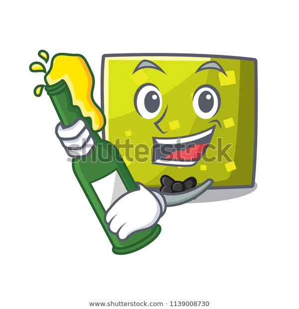

<nav class="navbar navbar-expand-md" style="background-color: rgb(0,209,178); width: 100%;">
  <h3 class="ml-5" style="color: white; font-weight: 300;">Beans Love Beer</h3>
  <div class="navbar-collapse">
    <ul class="navbar-nav justify-content-end w-100 mr-5">
      <li class="nav-item"><a class="nav-link mr-5 text-center btn" routerLink="/" style="color: white; font-weight: 400;">Home</a></li>
      <li class="nav-item"><a class="nav-link mr-5 text-center btn" routerLink="/favourite" style="color: white; font-weight: 400;">Favourites</a></li>
    </ul>
  </div>
  
</nav>

<div class="container mt-5 px-5">
  <form class="row w-100 form-inline mx-auto">
    <input type="text" class="form-control mr-1 col-7 offset-2" [(ngModel)]="search_text" name="search_text" placeholder="Search for Beer....">
    <button class="btn btn-primary col-1" (click)="search()">Search</button>
  </form>
  
</div>

<div class="container mt-2">
  <div class="card-columns">
    
    <div *ngFor="let beer of beers" class="card mb-3" style="height: 200px;">
      <div class="row no-gutters">
        <div class="col-md-4">
          
        </div>
        <div class="col-md-8">
          <div class="card-body">
            <p class="justify-content-end w-100 text-right fa" style="position: absolute;"><span class="btn mr-5 text-right" (click)="fav(beer.product_id)" [class.fa-star-o]="!beer.fav" [class.fa-star]="beer.fav" [class.checked]="beer.fav" ></span></p>
            <h5 class="card-title mt-2">{{ beer.title }}</h5>
            <p class="card-text small">{{ beer.desc }}</p>
          </div>
        </div>
      </div>
    </div>
    
    

  </div>
</div>


<!-- fa-star checked -->
<!-- fa-star-o -->

<!-- <div class="card mb-3" style="height: 200px;">
  <div class="row no-gutters">
    <div class="col-md-4">
      
    </div>
    <div class="col-md-8">
      <div class="card-body">
        <h5 class="card-title">Lager</h5>
        <p class="card-text">Lagers are a typical entry point into beer for new drinkers. Made with bottom fermenting yeast that has a lower tolerance to alcohol.</p>
      </div>
    </div>
  </div>
</div> -->
